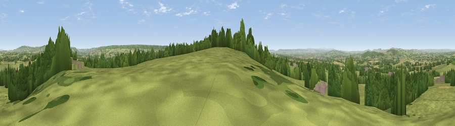

Viewpoint near Whimple
#9083 in England · top 13% of its area beats it · near WhimpleThe view, rendered

A 360° render of this exact spot computed from the terrain model, tree cover and land cover — summer colours, afternoon light, calibrated against photographs of famous viewpoints. Real trees, hedges and buildings will differ in detail.
The panorama
Grey silhouette: terrain skyline in each direction (720 bearings, Earth curvature and refraction included). Dashed green: skyline with trees (+15 m) and buildings (+8 m) as obstacles. Blue strip: how far the ground is visible on each bearing.
Where the view opens
Wedge length = distance to the farthest visible ground on that bearing (vegetation-aware). Rings at 10, 25 and 50 km.
What fills the view
64% grassland · 22% woodland · 12% cropland · 2% built-up
Angular shares of the visible panorama (visual magnitude), not map area. Landscape diversity 0.42 (0–1 Shannon).
Key numbers
More beautiful places nearby
The staircase of upgrades: each row has a higher view potential than everything closer. Driving times are estimates from straight-line distance, calibrated against real road routing — check an actual route before setting out.
| Place | Direction | Drive | Score |
|---|---|---|---|
| Viewpoint near West Hill | S · 1 km | ~3 min | 66.2 |
| Viewpoint near Gittisham | E · 7 km | ~14 min | 68.2 |
| Viewpoint near Tipton St John | SE · 7 km | ~15 min | 73.3 |
| Viewpoint near Tipton St John | SE · 7 km | ~15 min | 81.5 |
| Viewpoint near Colaton Raleigh | SSE · 10 km | ~19 min | 82.1 |
| Viewpoint near Sidmouth | SSE · 11 km | ~21 min | 83.0 |
| High Peak | SSE · 12 km | ~22 min | 85.3 |
| Golden Cap | E · 35 km | ~53 min | 88.7 |
50.76297, -3.33028 · source: screening · position refined by local search. Computed location — check access rights before visiting.